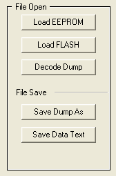
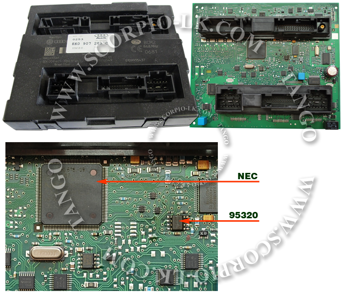

|
BCM2 Dump Maker |
Top Previous Next |
|
BCM2 (Dump Maker)
Ver.1
Ver.2
The BCM2 unit contains some security data that is necessary in cases of unit replacement or modifying. Depending on the unit generation, the data is encrypted and stored in the eeprom 95320 or in the NEC's data flash. To decrypt data it is necessary to read the 95320 + NEC Flash or NEC DataFlash + NEC ProgramFlash.
Features Basic
Editing
Dump loading At the earliest models of BCM2 it is not necessary to read the NEC. The Dump Maker detects this situation when the eeprom dump is being loaded and displays an appropriate message. Therefore if you are doubt is NEC's dump necessary or not, begin your work with the eeprom. If you have got a message that NEC's dump is not necessary, continue without reading of the NEC, if no message displayed, read the NEC and upload its dump.
To load the eeprom dump: click Load EEPROM button. To load the NEC dump click Load FLASH buttton

Dump decrypting After the dumps have been loaded the next action is to decrypt dump of 95320.
To decrypt the dump: click Decode Dump button.
Editing of the data After the dump decrypted the clear data is being displayed in the appropriate fields of the window. Near each data there is the Edit button. Clicking of the button involves a dialog window with editing tools.
To edit any data: click the Edit button. To edit a key's data: click the Edit button, to delete a key's data: click the Delete button
Saving of the edited data After changes have been done it is necessary to encrypt the dump and save it. . To save the new dump: click Save Dump As button.
Saving of the decrypted data This step is not necessary and allows to save the decrypted data in the text format.
To save data: click Save Data Text button.
Make Clone There are two buttons for this action: Export Data and Import Data. After the dump has been decrypted both buttons are available. Exporting of data saves the plain data to the specified folder. If necessary it is possible to make additional changes with a hex-editor. Importing of data loads the plain data. After clicking Save Dump As the imported data will be encrypted and loaded to the unit. Thus, this tool makes possible to transfer all data between units.
Version NEC + 95320 
|